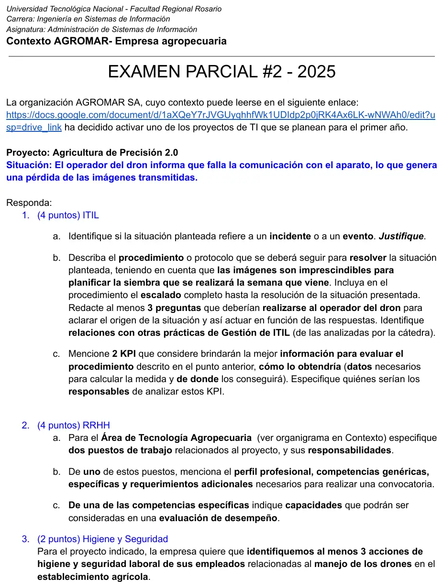

2° parcial, 06/09/2025
2° parcial, 06/09/2025
Enunciado


Propuesta de respuesta
Respuesta no verificada. La propuso Luta Studios con inteligencia artificial y ningún docente la revisó. Puede tener errores.
1. ITIL
1a. Es un incidente. El apunte lo define como «una interrupción no planificada de un servicio o la reducción de la calidad de un servicio». La transmisión de imágenes del dron se cortó sin estar planificado, y lo informa el usuario del servicio, el operador. Un evento es «cualquier cambio de estado que tenga importancia para la gestión de un servicio u otro elemento de configuración (CI)» y se reconoce por notificaciones del CI o de una herramienta de monitoreo. Si el sistema del dron hubiera avisado solo la pérdida de señal, habría empezado como evento de excepción que registra un incidente. Acá ya hay un servicio interrumpido.
1b. Procedimiento con escalado completo.
Preguntas al operador del dron:
- ¿La comunicación se cortó en un punto del lote o desde el despegue? ¿A qué distancia y altura estaba?
- ¿El control o la app muestran un mensaje de error, señal baja o batería baja?
- ¿Se actualizó hace poco el firmware del dron, del control o la app?
- ¿Las imágenes quedan guardadas en la memoria del dron aunque falle la transmisión?
- ¿Pasa lo mismo con otro dron o con otro control?
| Paso | Quién | Qué hace |
|---|---|---|
| 1. Registro | Mesa de servicios, primera línea | Registra el incidente con identificador, verifica que no esté duplicado y notifica |
| 2. Clasificación | Mesa de servicios | Categoría «comunicaciones del dron». Impacto alto, porque frena la planificación de la siembra. Urgencia alta, porque la siembra es la semana que viene. Prioridad alta |
| 3. Diagnóstico inicial | Mesa de servicios | Hace las preguntas y busca en la KB. Si hay batería baja o mucha distancia, guía al operador para volver a volar más cerca. Si el firmware cambió hace poco, sigue al paso 4 avisando a Control de Cambios. Si las imágenes quedaron en la memoria, se descargan por cable y se resuelve la urgencia |
| 4. Escalado funcional | Especialista en drones del Área de Tecnología Agropecuaria, segunda línea | Revisa antena, enlace de radio, control y configuración. Si es el equipo, lo cambia por otro y se repite el vuelo |
| 5. Escalado funcional | Proveedor del dron, tercera línea (contrato UC) | Repara o reemplaza el equipo, o publica una corrección del firmware |
| 6. Escalado jerárquico | Responsable del Área de Tecnología Agropecuaria | Si no se llega a tener imágenes antes de la siembra, decide la contingencia, como alquilar un dron, contratar un servicio de vuelo o usar imágenes satelitales |
| 7. Cierre | Mesa de servicios | Confirma con el operador que las imágenes llegan, actualiza la KB y la CMDB y cierra |
Relaciones con otras prácticas:
- Gestión de Eventos. Monitorear la telemetría del dron para que la pérdida de señal genere un evento antes del reclamo.
- Gestión de Problemas. Si el corte se repite, se abre un problema para buscar la causa raíz.
- Control de Cambios y Versiones. Si la causa o la solución es un firmware, su instalación va por un RFC y se puede volver a la versión anterior.
- Configuración y Activos. La CMDB dice qué dron, control, antena y versión de firmware están en uso.
1c. Dos KPI
| KPI | Cómo se calcula | Datos y de dónde salen | Responsable |
|---|---|---|---|
| Tiempo medio de resolución de incidentes de drones | Suma de (hora de cierre − hora de registro) / cantidad de incidentes del período | Horas de registro y cierre de cada ticket, de la herramienta de tickets | Responsable de la mesa de servicios |
| Porcentaje de incidentes resueltos dentro del SLA | Incidentes cerrados dentro del SLA / incidentes cerrados × 100 | Tickets con su prioridad, su tiempo comprometido y su cierre, de la herramienta de tickets y el SLA acordado con el área | Responsable del Área de Tecnología Agropecuaria, con el Gerente de Sistemas |
2. RRHH
2a. Dos puestos del Área de Tecnología Agropecuaria
| Puesto | Responsabilidades |
|---|---|
| Especialista en drones y telemetría | Mantener y configurar drones, controles y enlaces. Planificar los vuelos. Atender los incidentes escalados como segunda línea. Coordinar con el proveedor |
| Analista de datos agronómicos | Procesar las imágenes de los drones, generar los mapas de prescripción para la siembra y validar su calidad antes de pasarlos a la maquinaria |
2b. Perfil del Especialista en drones y telemetría
| Aspecto | Detalle |
|---|---|
| Perfil profesional | Técnico o ingeniero en electrónica, telecomunicaciones, sistemas o agronomía con orientación en agricultura de precisión |
| Competencias genéricas | Trabajo en equipo, proactividad, comunicación con productores y operarios, resolución de problemas bajo presión |
| Competencias específicas | Configurar drones, controles y enlaces de radio. Diagnosticar fallas de comunicación y de firmware. Planificar vuelos y captura de imágenes para agricultura. Manejar el software de procesamiento de imágenes |
| Requerimientos adicionales | Habilitación para operar drones, si la normativa la exige. Licencia de conducir. Disponibilidad para trabajar en el campo y viajar entre establecimientos. Experiencia de 2 años en un puesto similar |
2c. Capacidades para la evaluación de desempeño
Competencia específica «Diagnosticar fallas de comunicación y de firmware». Cada capacidad con descripción y escala de 1 a 5, como en el ejemplo de la cátedra.
| Capacidad | Descripción | Escala |
|---|---|---|
| Diagnóstico | Identifica la causa con las herramientas de diagnóstico y las preguntas al operador | 1 a 5 |
| Resolución en tiempo | Resuelve los incidentes escalados dentro del SLA | 1 a 5 |
| Documentación | Registra la causa y la solución en la KB para que la primera línea la pueda usar | 1 a 5 |
| Prevención | Propone cambios, por ejemplo de equipo o de firmware, para que la falla no se repita | 1 a 5 |
3. Higiene y seguridad
Acciones para el manejo de drones en el establecimiento:
- Zona de despegue y aterrizaje señalizada, sin personas alrededor, y vuelos solo con buen tiempo, sin viento fuerte ni tormenta eléctrica. Es evitar el riesgo y combatirlo en el origen.
- Manejo seguro de las baterías de litio, con carga y guarda en un lugar ventilado, lejos de combustibles y con matafuego a mano.
- Capacitación y lista de control antes de cada vuelo, que es dar instrucciones al personal.
- Elementos de protección personal para el trabajo en el campo, como protección solar, gorro, anteojos y calzado de seguridad, y pausas e hidratación para evitar la fatiga y el golpe de calor.
- Exámenes médicos periódicos que controlen la vista y la fatiga del operador.
Respuesta no verificada. Puede tener errores.
Se armó con 2° parcial, definiciones de incidente y evento del apunte de Áreas de TI, actividades y escalado de incidentes, prácticas relacionadas, KPI de incidentes, perfil y competencias, el ejemplo de evaluación por capacidades de la cátedra y principios de prevención de higiene y seguridad.
Quedó en duda: El organigrama de Agromar no está en la materia, así que los nombres de los puestos del Área de Tecnología Agropecuaria y de las líneas de soporte son supuestos. La habilitación para operar drones depende de la normativa vigente, que no está en el material. Los EPP para el campo salen de los principios de prevención, no de un listado de la cátedra.
¿Cómo te fue?
Marcá cada tema del examen.
- ITILITIL, en Final
- PerfilesCompetencias y perfil, en 2° parcial
- Higiene y seguridadHigiene y seguridad laboral, en 2° parcial